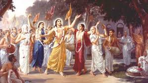

| HOME | NATIONAL PARKS IN MAHARASHTRA | FORTS IN MHARASHTRA | ANIMALS IN MHARASHTRA | FOOD IN MHARASHTRA | MUSIC IN MHARASHTRA | ART IN MAHARASHTRA | BIRDS IN MAHARASHTRA | LITERATURE IN MAHARASHTRA |
DALIT LITERATUREDalit literature is literature written by Dalits about their lives.Dalit literature emerged in the 1960s in the Marathi language, and it soon appeared in the Hindi, Kannada, Telugu, Bangla and Tamil languages, through narratives such as poems, short stories, and autobiographies, which stood out due to their stark portrayal of reality and the Dalit political scene.Dalit literature denounced the then-prevailing portrayal of life by mainstream Marathi literature. |
|
|  |
MARATHI LITERATUREThe earliest example of Maharashtri as a separate language dates to approximately 3rd century BCE: a stone inscription found in a cave at Naneghat, Junnar in Pune district had been written in Maharashtri using Brahmi script. A committee appointed by the Maharashtra State Government to get the Classical status for Marathi has claimed that Marathi existed at least 2300 years ago alongside Sanskrit as a sister language. Marathi, a derivative of Maharashtri, is probably first attested in a 739 CE copper-plate inscription found in Satara. Several inscriptions dated to the second half of the 11th century feature Marathi, which is usually appended to Sanskrit or Kannada in these inscriptions. |
CHILDERN LITERATUREChildren's literature can be traced to stories and songs, part of a wider oral tradition, that adults shared with children before publishing existed. The development of early children's literature, before printing was invented, is difficult to trace. Even after printing became widespread, many classic "children's" tales were originally created for adults and later adapted for a younger audience. Since the fifteenth century much literature has been aimed specifically at children, often with a moral or religious message. The late nineteenth and early twentieth centuries are known as the "Golden Age of Children's Literature" because many classic children's books were published then. |